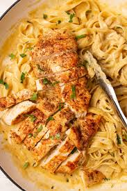

Chicken Alfredo

Description
Chicken alfredo is a classic favorite—a creamy white sauce, long strands of pasta mixed with tender pieces of lean protein.
Ingredients
- Olive oil
- Boneless skinless chicken breasts
- Salt and black pepper
- Heavy cream
- Fettuccine pasta
- Shredded parmesan cheese
- Unsalted butter
Directions
- Boil the noodles
- Cook the chicken
- Make the Alfredo sauce
- Drain the pasta
- Put Noodles in alfredo sauce
- Add Chicken
- Top with Parmesan
- Dig In!!!
Similar Recipe Link